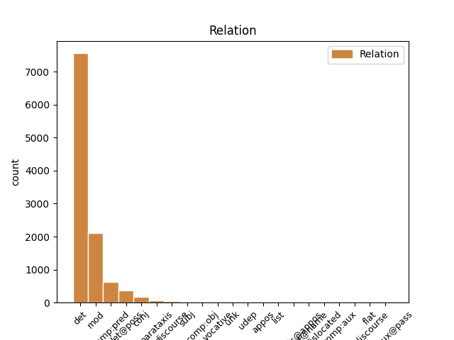
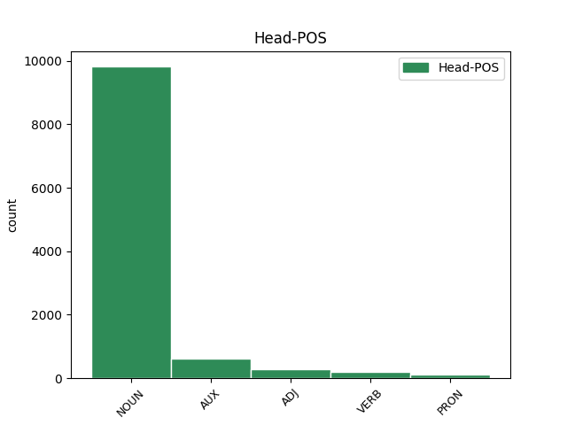
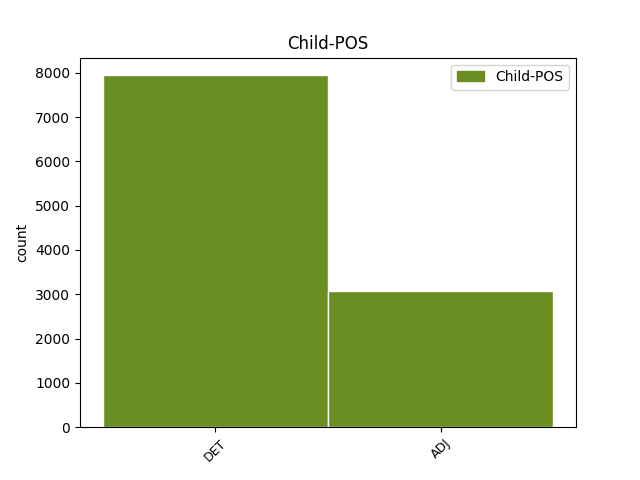

Distribution of features within this leaf



Agreement Rules sorted by frequency.
When the dependent token is None
1 #Grillo _ _ _ _ 0 _ _ _
2 non _ _ _ _ 0 _ _ _
3 mi _ _ _ _ 0 _ _ _
4 piace _ _ _ _ 0 _ _ _
5 , _ _ _ _ 0 _ _ _
6 ma _ _ _ _ 0 _ _ _
7 sta _ _ _ _ 0 _ _ _
8 dimostrando _ _ _ _ 0 _ _ _
9 che _ _ _ _ 0 _ _ _
10 il _ _ _ _ 0 _ _ _
11 nuovo _ _ _ _ 0 _ _ _
12 strumento _ _ _ _ 0 _ _ _
13 per _ _ _ _ 0 _ _ _
14 fare _ _ _ _ 0 _ _ _
15 #politica _ _ _ _ 0 _ _ _
16 è _ _ _ _ 0 _ _ _
17 il _ _ _ _ 0 _ _ _
18 #movimento _ _ _ _ 0 _ _ _
19 multilocale _ _ _ _ 0 _ _ _
20 e _ _ _ _ 0 _ _ _
21 non _ _ _ _ 0 _ _ _
22 il il DET RD Definite=Def|Gender=Masc|Number=Sing|PronType=Art 23 det _ _
23 partito partito NOUN S Gender=Masc|Number=Sing 0 _ _ _
24 nazionale _ _ _ _ 0 _ _ _
When the dependent token is None
1 #Grillo _ _ _ _ 0 _ _ _
2 non _ _ _ _ 0 _ _ _
3 mi _ _ _ _ 0 _ _ _
4 piace _ _ _ _ 0 _ _ _
5 , _ _ _ _ 0 _ _ _
6 ma _ _ _ _ 0 _ _ _
7 sta _ _ _ _ 0 _ _ _
8 dimostrando _ _ _ _ 0 _ _ _
9 che _ _ _ _ 0 _ _ _
10 il _ _ _ _ 0 _ _ _
11 nuovo _ _ _ _ 0 _ _ _
12 strumento _ _ _ _ 0 _ _ _
13 per _ _ _ _ 0 _ _ _
14 fare _ _ _ _ 0 _ _ _
15 #politica _ _ _ _ 0 _ _ _
16 è _ _ _ _ 0 _ _ _
17 il _ _ _ _ 0 _ _ _
18 #movimento _ _ _ _ 0 _ _ _
19 multilocale _ _ _ _ 0 _ _ _
20 e _ _ _ _ 0 _ _ _
21 non _ _ _ _ 0 _ _ _
22 il _ _ _ _ 0 _ _ _
23 partito partito NOUN S Gender=Masc|Number=Sing 0 _ _ _
24 nazionale nazionale ADJ A Number=Sing 23 mod _ _
Disagree Examples:
1 A _ _ _ _ 0 _ _ _
2 Mario _ _ _ _ 0 _ _ _
3 Monti _ _ _ _ 0 _ _ _
4 arrivano _ _ _ _ 0 _ _ _
5 richieste _ _ _ _ 0 _ _ _
6 di _ _ _ _ 0 _ _ _
7 incontri _ _ _ _ 0 _ _ _
8 un _ _ _ _ 0 _ _ _
9 po' _ _ _ _ 0 _ _ _
10 da _ _ _ _ 0 _ _ _
11 tutti _ _ _ _ 0 _ _ _
12 . _ _ _ _ 0 _ _ _
13 Gli _ _ _ _ 0 _ _ _
14 unici _ _ _ _ 0 _ _ _
15 che _ _ _ _ 0 _ _ _
16 non _ _ _ _ 0 _ _ _
17 si _ _ _ _ 0 _ _ _
18 sono _ _ _ _ 0 _ _ _
19 fatti fare VERB V Mood=Imp|Number=Sing|Person=2|Tense=Pres|VerbForm=Fin 0 _ _ _
20 ancora _ _ _ _ 0 _ _ _
21 vivi vivo ADJ A Gender=Masc|Number=Plur 19 comp:pred _ _
22 sono _ _ _ _ 0 _ _ _
23 gli _ _ _ _ 0 _ _ _
24 zapatisti _ _ _ _ 0 _ _ _
25 . _ _ _ _ 0 _ _ _
1 http://t.co/cDeNJchh _ _ _ _ 0 _ _ _
2 : _ _ _ _ 0 _ _ _
3 Governo governo NOUN S Gender=Masc|Number=Sing 0 _ _ _
4 Monti _ _ _ _ 0 _ _ _
5 , _ _ _ _ 0 _ _ _
6 l' _ _ _ _ 0 _ _ _
7 ira _ _ _ _ 0 _ _ _
8 di _ _ _ _ 0 _ _ _
9 la _ _ _ _ 0 _ _ _
10 Lega _ _ _ _ 0 _ _ _
11 : _ _ _ _ 0 _ _ _
12 È _ _ _ _ 0 _ _ _
13 contro _ _ _ _ 0 _ _ _
14 il _ _ _ _ 0 _ _ _
15 Nord _ _ _ _ 0 _ _ _
16 Soddisfatti soddisfatto ADJ A Gender=Masc|Number=Plur 3 parataxis _ _
17 Pd _ _ _ _ 0 _ _ _
18 e _ _ _ _ 0 _ _ _
19 Terzo _ _ _ _ 0 _ _ _
20 Polo _ _ _ _ 0 _ _ _
21 . _ _ _ _ 0 _ _ _
22 Vendola _ _ _ _ 0 _ _ _
23 : _ _ _ _ 0 _ _ _
24 Ombre _ _ _ _ 0 _ _ _
25 http://t.co/m7EId4QY _ _ _ _ 0 _ _ _
1 Mario _ _ _ _ 0 _ _ _
2 #Monti _ _ _ _ 0 _ _ _
3 : _ _ _ _ 0 _ _ _
4 il _ _ _ _ 0 _ _ _
5 più _ _ _ _ 0 _ _ _
6 grande grande ADJ A Number=Plur 7 mod _ _
7 capro capro NOUN S Gender=Masc|Number=Sing 0 _ _ _
8 espiatorio _ _ _ _ 0 _ _ _
9 di _ _ _ _ 0 _ _ _
10 gli _ _ _ _ 0 _ _ _
11 ultimi _ _ _ _ 0 _ _ _
12 150 _ _ _ _ 0 _ _ _
13 anni _ _ _ _ 0 _ _ _
14 . _ _ _ _ 0 _ _ _
1 #Cacciari _ _ _ _ 0 _ _ _
2 #Grillo _ _ _ _ 0 _ _ _
3 il il DET RD Definite=Def|Gender=Masc|Number=Sing|PronType=Art 4 det _ _
4 politici politico NOUN S Gender=Masc|Number=Plur 0 _ _ _
5 attualmente _ _ _ _ 0 _ _ _
6 da _ _ _ _ 0 _ _ _
7 più _ _ _ _ 0 _ _ _
8 anni _ _ _ _ 0 _ _ _
9 in _ _ _ _ 0 _ _ _
10 parlamento _ _ _ _ 0 _ _ _
11 non _ _ _ _ 0 _ _ _
12 sono _ _ _ _ 0 _ _ _
13 in _ _ _ _ 0 _ _ _
14 grado _ _ _ _ 0 _ _ _
15 di _ _ _ _ 0 _ _ _
16 fare _ _ _ _ 0 _ _ _
17 strategie _ _ _ _ 0 _ _ _
18 sono _ _ _ _ 0 _ _ _
19 Pirati _ _ _ _ 0 _ _ _
20 abituati _ _ _ _ 0 _ _ _
21 si _ _ _ _ 0 _ _ _
22 a _ _ _ _ 0 _ _ _
23 il _ _ _ _ 0 _ _ _
24 furto _ _ _ _ 0 _ _ _
1 RT _ _ _ _ 0 _ _ _
2 @user _ _ _ _ 0 _ _ _
3 : _ _ _ _ 0 _ _ _
4 #rt _ _ _ _ 0 _ _ _
5 segui _ _ _ _ 0 _ _ _
6 mi _ _ _ _ 0 _ _ _
7 e _ _ _ _ 0 _ _ _
8 ti _ _ _ _ 0 _ _ _
9 seguo _ _ _ _ 0 _ _ _
10 , _ _ _ _ 0 _ _ _
11 aumenti _ _ _ _ 0 _ _ _
12 tu _ _ _ _ 0 _ _ _
13 e _ _ _ _ 0 _ _ _
14 aumento _ _ _ _ 0 _ _ _
15 anch' _ _ _ _ 0 _ _ _
16 io _ _ _ _ 0 _ _ _
17 . _ _ _ _ 0 _ _ _
18 E _ _ _ _ 0 _ _ _
19 ti _ _ _ _ 0 _ _ _
20 voto _ _ _ _ 0 _ _ _
21 l' il DET RD Definite=Def|Number=Sing|PronType=Art 22 det _ SpaceAfter=No
22 icon icona NOUN S Gender=Fem|Number=Plur 0 _ _ _
23 se _ _ _ _ 0 _ _ _
24 aggiungi _ _ _ _ 0 _ _ _
25 a _ _ _ _ 0 _ _ _
26 i _ _ _ _ 0 _ _ _
27 preferiti _ _ _ _ 0 _ _ _
28 ❤ _ _ _ _ 0 _ _ _